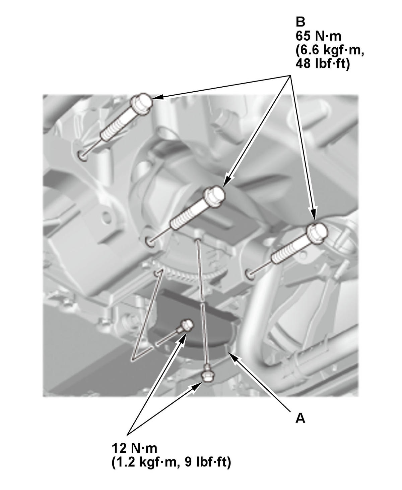

Engine Oil Pan Removal and Installation (K20C2): Installation
- Oil Pan - Install
1. Apply liquid gasket to the lower block and the cam chain case mating surface of the oil pan, and to the inside edge of the threaded bolt holes. 2. Install the oil pan (A) with a new O-ring (B).
3. Tighten the bolts in three steps. In the final step, torque all bolts, in sequence, to the specified torque. Wipe off the excess liquid gasket on the each side of crankshaft pulley and flywheel or drive plate. Specified Torque: 12 N.m (1.2 kgf.m, 9 lbf.ft) - Front Subframe - Install
- Front Brace - Install
- Lower Arm Mounting Bolt - Install
- Transmission Jack - Remove
- Torque Rod Bracket - Install
- Torque Rod - Install
- Clutch Cover/Torque Converter Cover - Install

Courtesy of HONDA, U.S.A., INC.1. Install the clutch cover (M/T) or the torque converter cover (CVT) (A) and the transmission mounting bolts (B). - Drive Belt Idler Pulley Base - Install (Without A/C)
- A/C Compressor - Install (With A/C)
- Drive Belt - Install
- TWC Bracket - Install
- Exhaust Pipe A - Install
- Engine Undercover - Install
- Engine Undercover Lid - Install
- Engine Oil - Refill
- Wheel Alignment - Check